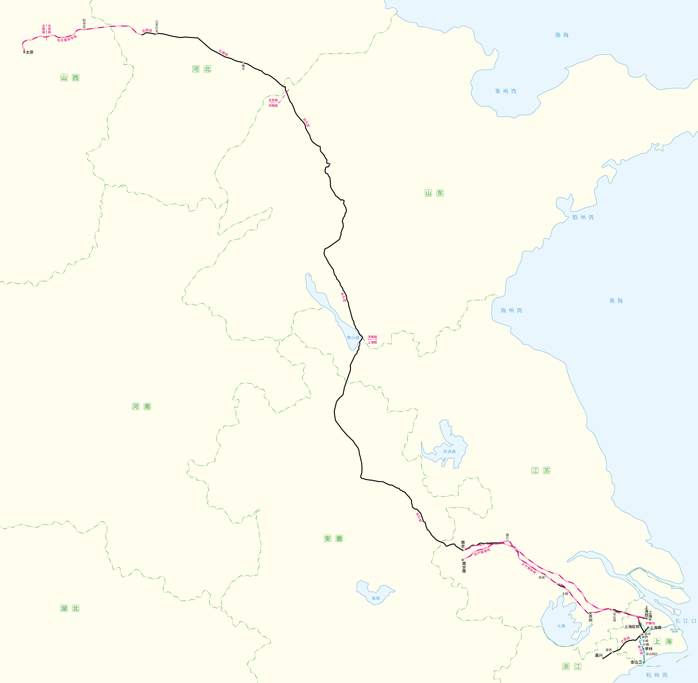
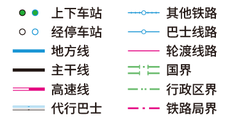

并未记录全部车次。
| 列车号 | 自 | 至 |
|---|---|---|
|
G8252
|
上海西 | 苏州 |
|
G8255
|
苏州 | 上海西 |
|
Z196
Z197
Z196
|
上海 | 太原 |
|
Z198
Z195
Z198
|
太原 | 上海 |
|
Y701
|
上海西 | 嘉兴 |
|
Y702
|
嘉兴 | 上海西 |
|
G6
|
上海虹桥 | 南京南 |
|
G7027
|
南京 | 上海西 |
|
TP
1M92
8049
1M92
|
Glasgow Central | Manchester Piccadilly |
|
NT
2L70
9920
2L70
|
Manchester Victoria | Wigan Wallgate |
|
VT
1S90
6261
1S90
|
Wigan North Western | Glasgow Central |
|
SR
1A81
0251
1A81
|
Glasgow Queen Street | Dundee |
|
SR
1T82
0265
1T82
|
Dundee | Glasgow Queen Street |
中国铁路
英国铁路
伦敦近郊
以OpenStreetMap为底图描绘


出现bug时请双击重置键。
放大时可能卡顿。
放大时可能卡顿。